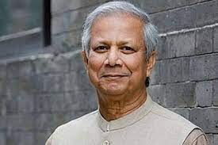

Who is Doctor Yunus? Why he is the temporary prime minister of Bangladesh? The noble laureate.

MD. Yunus is a leader of Bangladesh’s interim government. After the resignation of the former prime minister of Bangladesh Sheikh Hasina. The students of Bangladesh have selected Dr. Yunus for the interim government of Bangladesh.
Muhammad Yunus (born 28 June 1940) is a Bangladeshi entrepreneur, banker, economist, politician, and civil society leader who has been serving as the chief advisor of the interim government of Bangladesh since 8th August 2024. Dr.Yunus is a noble laureate person. Yunus was awarded the Nobel Peace Prize in 2006 for founding the Grameen Bank and pioneering the concepts of microcredit and microfinance. Yunus has received several other national and international honors, including the United States Presidential Medal of Freedom in 2009 and the Congressional Gold Medal in 2010.

He was born on 28th June 1940 to a Bengali Muslim family in the village of Bathua, by the Kaptai road at Hathazari in the Chittagong District of Bengal Presidency (now Bangladesh ). He is the third of nine children. His father was Haji Muhammad Dula Mia Soudagar, a jeweler, and his mother was Sufia Khatun. His early childhood was spent in the village. In 1944, his family moved to the city of Chittagong, and he moved from his village school to Lamabazar Primary School.
Personal info(DR. Yunus)
Dr. Yunus is 84(eighty-four) years old. His wife name is Vera Forostenko. He has two dauther Monica and Deena. In 1967, while Yunus attended Vanderbilt University, he met Vera Forostenko, a student of Russia. They were married in 1970.